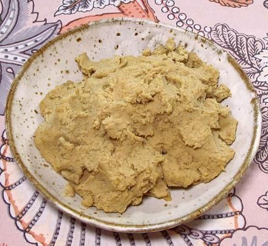
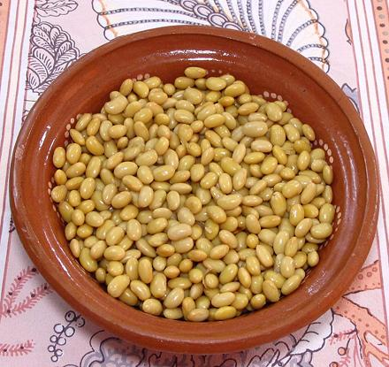
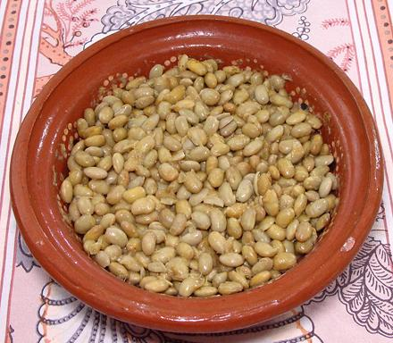
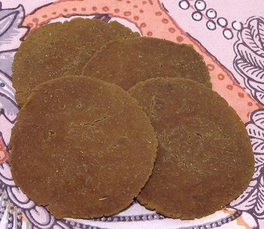
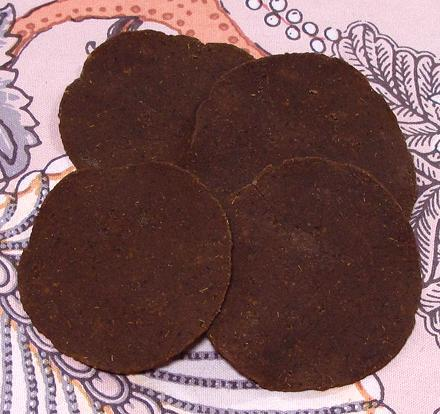

Finished Tua Nao Paste
Consistency is ideal for making disks.

Cooked Soybeans
in Fermenting Bowl

Soybeans, Fermented 5 Days

Dried Tua Nao Disks
These are about 2-7/8 inches diameter and
0.08 inches thick. This batch used some
powdered Burmese Tua Nao for starter.
Ones I made with wild fermentation were
a little lighter.

Dried Tua Nao Disks from Burma
These are about 3-1/8 inches diameter and
0.06 inches thick. I don't know why they
are darker and more leathery, but they are
nearly the same color as mine when ground.